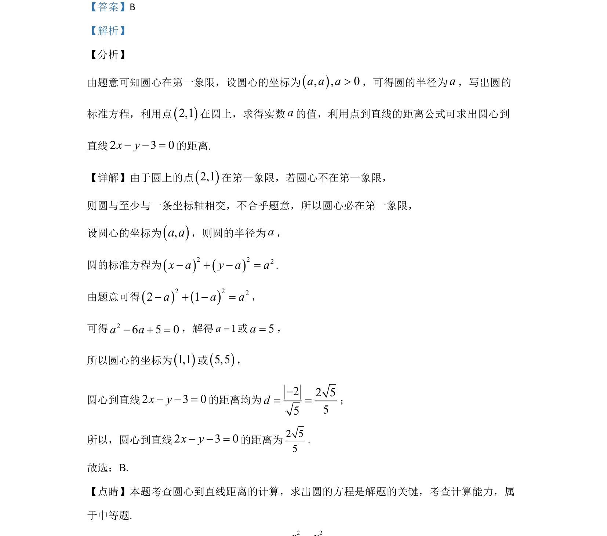

考点：圆标准方程 点到直线距离公式 解一元二次方程
考查根据象限条件设圆心坐标求圆方程，进而计算点到直线距离

📄 原 PDF 第 6 页：
素材/真题/吉林/2008-2024·（吉林）数学高考真题/2020年高考数学试卷（文）（新课标Ⅱ）（解析卷）.pdf
8.若过点（2，1）的圆与两坐标轴都相切，则圆心到直线2 3 0x y- - =的距离为（ ） A. 55 B. 2 55 C. 3 55 D. 4 55
【答案】B 【解析】 【分析】 由题意可知圆心在第一象限，设圆心的坐标为, , 0a a a>，可得圆的半径为a，写出圆的 标准方程，利用点2,1在圆上，求得实数a的值，利用点到直线的距离公式可求出圆心到 直线2 3 0x y- - =的距离. 【详解】由于圆上的点2,1在第一象限，若圆心不在第一象限， 则圆与至少与一条坐标轴相交，不合乎题意，所以圆心必在第一象限， 设圆心的坐标为,a a，则圆的半径为a， 圆的标准方程为2 22x a y a a- + - =. 由题意可得2 222 1a a a- + - =， 可得26 5 0a a- + =，解得1a=或5a=， 所以圆心的坐标为1,1或5,5， 圆心到直线2 3 0x y- - =的距离均为 22 555d-= =； 所以，圆心到直线2 3 0x y- - =的距离为2 55 . 故选：B. 【点睛】本题考查圆心到直线距离的计算，求出圆的方程是解题的关键，考查计算能力，属 于中等题.